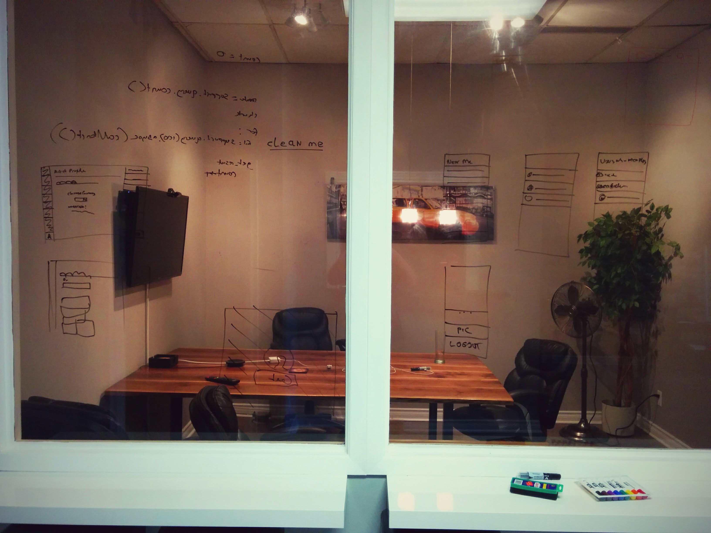
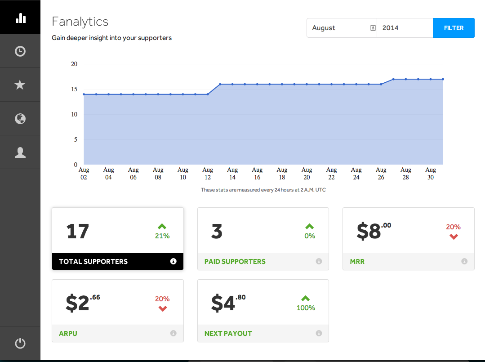
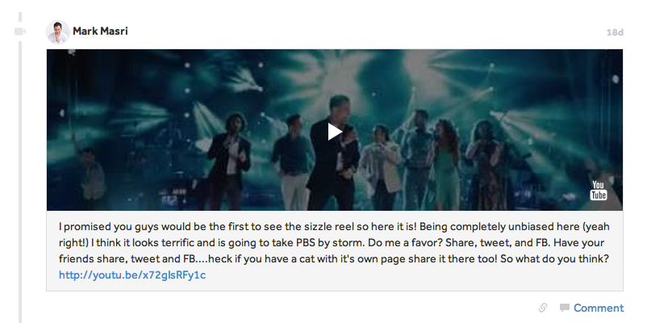
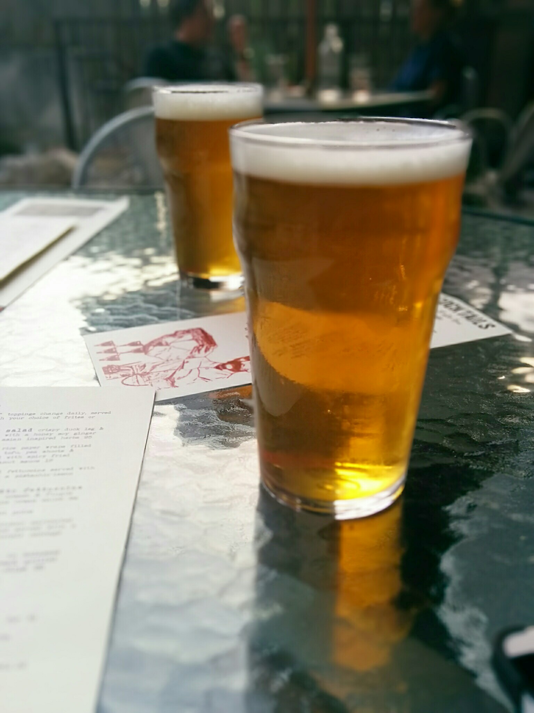

A Brief History
Fan.si was founded less than a year ago by Joel Augé, Matt Grieve and Jack Read. The company was created because of a fundamental problem in the music industry; unless you are an A-list artist it is incredibly difficult to earn a consistent paycheque. Fan.si wants to change that, one fan at a time, by giving fans the personal connection they want with their favourite musicians and in return giving the artist ongoing revenue that they can count on. Even though the platform has just come out of beta there are artists already ready making more than $500 a month in recurring revenue directly from their fans. In early 2014 the company secured an intial seed round from a combination of private investors and 500startups and recently secured another round of additional funding.
My Role
My role at Fan.si was a full stack developer. This meant that I would jump from working in Python on our backend RESTful API to designing and creating frontend interfaces with Backbone.js and HTML5. The team being so small I was also responsible for fixing bugs in the codebase, sometimes even dropping whatever I was doing to work on fixing a major problem in production. Being a full stack developer is not an easy task, you have to be able switch between not only programming languages but how you think about the code you are writing since frontend and backend have different programming paradigms. Being a full stack developer is certainly a challenge but I loved being able to develop features end-to-end and see them live on the site.
Diving Right In
When I started on my first day I expected to be given some materials to being my ramp up and asked to familiarize myself with the codebase and then when I was ready, to do little one-off tasks. While this was mostly true the last point did not happen, instead about halfway through my first day I was asked to start thinking about how I would design a major feature. This feature was a dashboard for artists to get analytic data about their profiles, it needed to show the total number of supporters, their monthly revenue, average revenue per user, and more. I was given nearly total control over the project right away, checking in with Jack at each stage of the process. By the end of my first week I had a nearly complete prototype working and it was deployed to the live site by the second week. This was a feeling I had never experienced before, the pride of seeing a feature through from start to finish, it was incredible.
 A little test data being displayed on my first feature
Working on a Small Team
Working on a small team can be a difficult challenge. You don't have as many resources available to you as you would as part of a large company. You won't necessarily have the time to get everything you need done. And interpersonal problems can be maginified when working with such a small group of people day after day. However I have never had a better time at work, I've learned that I love the feeling of being closely connected to everybody working to make the business a success.
Flying by the Seat of Your Pants
One of the most exciting and scary parts about working at such a small company is the 'flying by the seat of your pants feeling'. What do I mean by this? I mean that often times there's no processes, no prior ideas to guide what you're doing. 'Will this feature work?', 'how are we going to test this?', 'when do we know when to stop developing this feature and just go live?', these are questions that sometimes cannot be answered.

You have to be willing to just do something and deal with the consequences once they happen. It may be a cliché by now but Facebook's famous philosophy 'Move fast and break things' is true for a small software company. You cannot afford to spend six months polishing and perfecting a feature when you only have runway for eight more months.
The best example of this at Fan.si was when we decided one day to completely rewrite the front-end user interface to provide a better user experience both for artists and supporters. The end result took a little over a week to complete and the interface was completely changed. It was a big risk for us as we were completely changing the UX of the site and stopped all other work to throw ourselves into an idea that we believed would pay off. And pay off it did. Every since the change we've found that users stay on the site longer, comment more, and artists have an easier time gaining new supporters. Sometimes you have to take risks to get a big payoff.
Having Input
One of the most valuable things to me about working on a small team is the ability to have a large amount of input on every project you work on. Even to the point of suggesting new ideas for projects. My favourite moment was a feature that I had conceived, gotten approval for and implemented end to end. Artists are able to post 'feed' updates to their supporters through our web interface. At the time they could upload pictures to the site or just post text. I knew that this wasn't enough. We needed a more media rich experience to truly engage our users. So I came up with the idea to allow for a variety of embeddable links. As a result we now support the ability to embed Soundcloud, Youtube, Vimeo and Instagram content directly in a feed item. This makes the experience much more interactive for a supporter and makes the feed look way better.
 A Youtube video embedded in a feed item on the platform
Downtown Guelph
One the best things about working at Fan.si was the location. Located right in the heart of downtown Guelph we were surrounded by amazing coffee shops and restaurants. We would regularly go out to places like Ox, Baker Street and Planet Bean. This had a dual purpose of having amazing food but also helped strength our bonds as a team. In such a small company if you cannot get along with each other and enjoy spending time together I don't believe that you can be successful.
 Team building at Ox
On top of all this I got to bike to work every day which was amazing for relieving stress and enjoying the beautiful summer weather.
The End
I truly could not have hoped for a better co-op experience. I learned so much over my four short months at Fan.si and have become incredibly confident in my abilities as a developer. Best of all it's not going to end as a I am staying on the team part time through school. I can't thank Jack and Joel enough for giving me my first shot at being a real developer and everyone at Fan.si for such an amazing experience. I also want to thank my friend Ryan for introducing me to Fan.si and getting me the interview there. I can't wait to see what the future holds for the company as we continue working towards fixing the music industry.
Thanks again guys